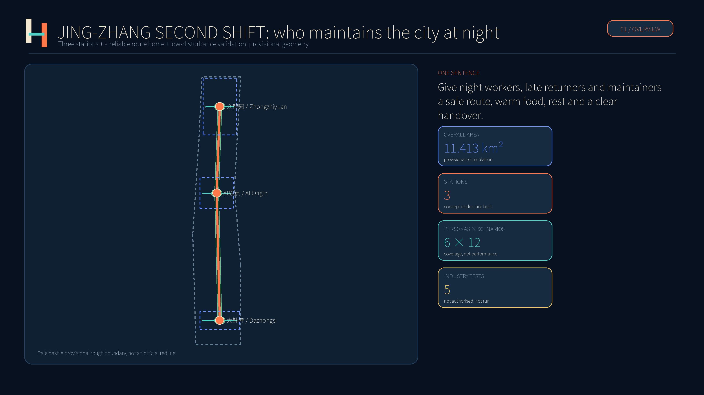
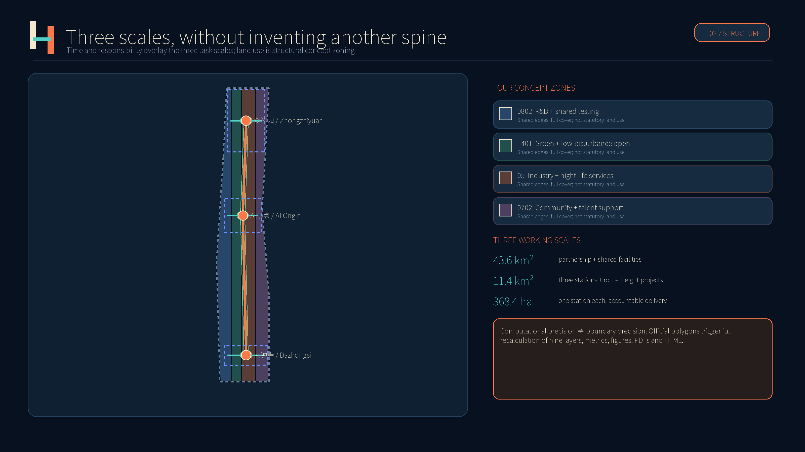
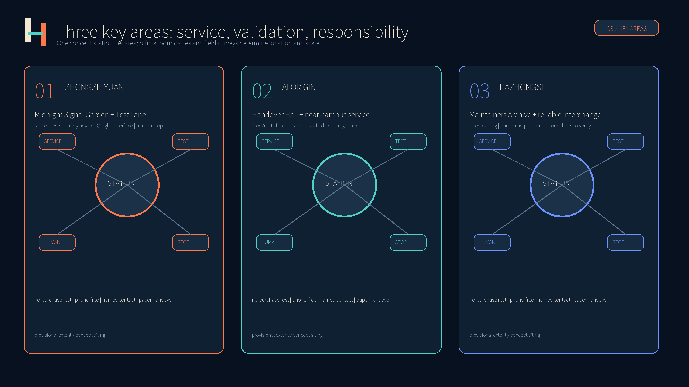
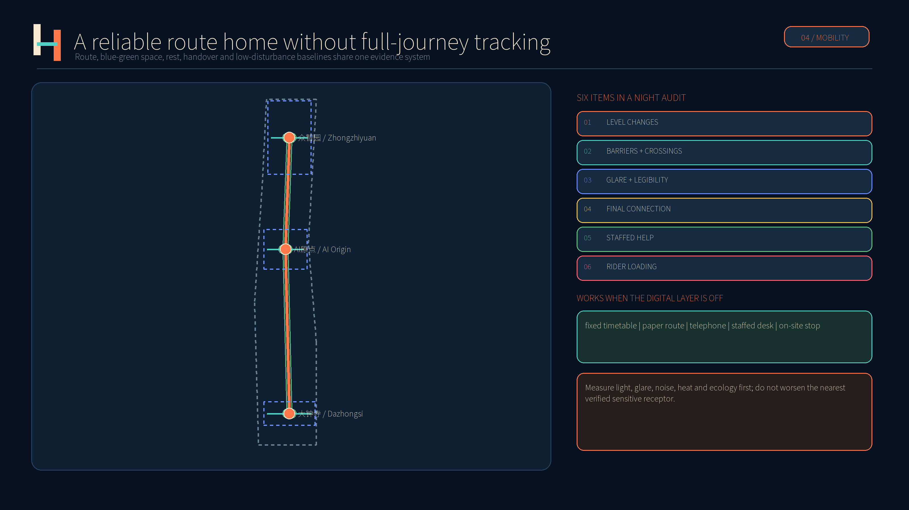
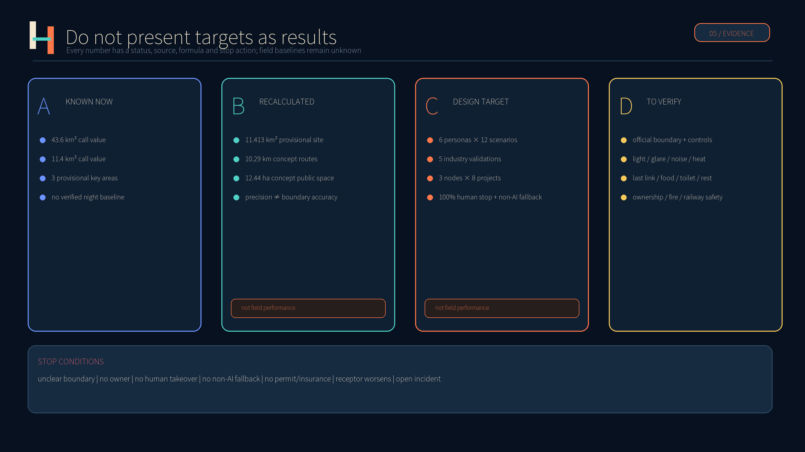

JING-ZHANG SECOND SHIFT · 2026
SECOND
SHIFT
Give night workers, late returners and city maintainers a safe route, warm food, rest and a clear handover.
CONCEPTUAL RECOMMENDATION
Provisional rough geometry; not statutory planning, official siting, construction commitment or field performance.

Core metrics
Three-Level Scope
Coordinated research covers about 43.6 km², overall design about 11.4 km² and three key areas about 368.4 ha. Second Shift adds time and responsibility rather than another concept spine.

Land use, buildings and blue-green public space
Four shared-edge concept zones cover the provisional site; codes follow the site package and are not statutory land use.
Six small footprints test station capacity only; survey and adaptive reuse come first. Height, FAR and intervention remain unverified.
Measure light, glare, noise, heat and ecology first; meet safety standards without worsening the nearest verified receptor.
Detailed Design of Key Areas

Midnight Signal Garden + Test Lane: shared tests, safety advice, human stop and public explanation.
Handover Hall + near-campus service: food, rest, flexible space, phone-free use and night audit.
Maintainers Archive + reliable interchange: rider loading, human help, team honour and links to verify.
Transport, Walking and Municipal Service

Concept routes are not existing roads, railway, approved redlines or navigation. Workers, residents, accessibility representatives and operators audit each route after dark; fixed timetables, paper routes, telephone and staffed desks work with the digital layer off.
Six Personas
28-year-old engineer leaving at 23:30; needs reliable last-mile travel and help without excessive data collection.
47-year-old maintainer; needs clear hazards, previous actions and stop-work authority.
52-year-old cleaning lead; needs no-purchase seating, water, charging, toilets and human-confirmed schedules.
33-year-old rider; needs safe loading and warm food without opaque speed pressure.
64-year-old resident; needs level routes, low glare/noise and staffed help without a smartphone.
36-year-old small-firm test lead; needs affordable trials with clear boundaries, approval, stop and incident rules.
AI Scenarios: 12 Cards, 5 Industry Validations
AI is limited to necessary prediction, scheduling and anomaly screening. People decide fares, penalties, denial of service, scheduling, dismissal, work-order closure and emergencies. Without approval, a scenario is not authorised and not run.
Uses verified lighting, works, accessibility and connection information without full-journey tracking.
Non-AI fallback: Paper map + staffed helpShows alternatives from published schedules and staff confirmation; operators control dispatch and fares.
Non-AI fallback: Fixed timetable + phoneUses aggregate demand to prepare food and reduce waste; no identity-based pricing.
Non-AI fallback: On-site menu + cashShows seating, water, toilets and charging; on-site signs take priority.
Non-AI fallback: Fixed signs + staffOrganises authorised records into done, pending and next contact; cannot auto-close.
Non-AI fallback: Paper handover logAssists translation for routes, medical and police information; high-risk requests transfer to a person.
Non-AI fallback: Phone interpreter + deskFlags possible noise or glare using verified works, event and equipment schedules.
Non-AI fallback: Notice board + hotlineTests obstacle avoidance, takeover and noise only on separated routes and defined hours; no open-road use.
Non-AI fallback: Human trolley baselineUses synthetic, de-identified or dedicated rigs to test false and missed alerts; qualified staff decide repairs.
Non-AI fallback: Scheduled manual inspectionCompares manual samples, non-imaging sensing and edge processing; outputs time-banded totals only.
Non-AI fallback: Manual sample countsOlder, low-vision and night-shift users blind-test glare, legibility and wrong turns; model suggestions are field-checked.
Non-AI fallback: Physical mock-up comparisonTests multilingual prompts, human escalation, offline operation and logs without connecting to live emergency systems.
Non-AI fallback: Paper procedure + radioThree Pilgrimage and Honour Nodes
Shows the full service chain from detection to verification with staffed hours.
Opt-in team methods, no mandatory naming and no speed ranking.
Low-brightness, low-noise public explanation of running, maintenance and paused states.
Renewal Projects
| Project | Proposed owner | Beneficiaries | Acceptance |
|---|---|---|---|
| P01 Three Second Shift Stations | Local public-service lead + venue operator | Night workers, late returners, residents | All three concept pilots publish hours, human contacts and phone-free access. |
| P02 Reliable Route Home | Transport, local-service and property group | Late returners, older and disabled users | Every pilot route gets a human after-dark audit; each issue has an owner and closure record. |
| P03 Warm Food and Water Windows | Licensed vendors + operator | Night workers and riders | Publish price, hours, permit and surplus handling; no identity pricing. |
| P04 No-purchase Rest Points | Venue operator + worker/community partner | Cleaners, guards, couriers, carers | Provide seating, water, charging and toilets without purchase or app. |
| P05 Handover Workshop | Facilities maintenance consortium | Maintenance teams and site users | Orders record source, time, owner, risk, action and verification; AI cannot auto-close. |
| P06 Low-disturbance Test Lane | Sandbox operator + independent reviewer | Small firms, researchers, residents | At least four industry validations, each with boundary, hours, human stop, rollback and incident report. |
| P07 Darker and Quieter Edge | Landscape, lighting, ecology and resident group | Residents, nocturnal wildlife, night workers | Measure first; do not worsen sensitive receptors and meet applicable safety standards. |
| P08 Second Shift Public Ledger | Governance board + third-party auditor | All public users | Publish status, data notes, model cards, complaints, incidents and corrections while protecting sensitive data. |
Long-term operation
Daily Two-minute Handover, weekly Walk the Night Route, monthly Open Maintenance Day, quarterly Low-disturbance Test Night and annual Handover Festival. Worker participation is paid work; any on-site worker may pause for safety.
Task Coverage
official requirements in compliance matrix
agent.1–agent.6 addressed
professional depth items mapped
Self-check Status, Sources and Assumptions

Repository scripts persist deterministic, spatial, visual and professional-evidence gates; pass means package readiness only.
Official call, taskbook, site package and eight global cases are registered; external facts are paraphrased and graphics independently drawn.
Provisional boundaries, controls, ownership, baselines, transport, pilot authorisation and delivery responsibility remain to be verified.